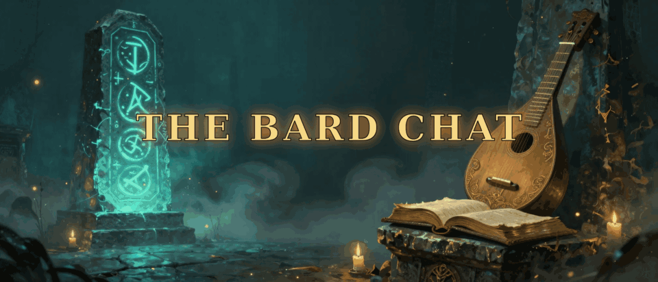
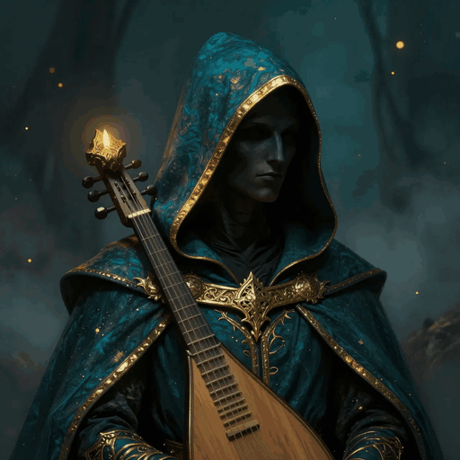

Avatar turntable is a placeholder built from a chest-up concept render. A proper full-body multi-angle 360° turntable replaces it once the Hugging Face quota resets and the scheduled follow-up agent runs.
The Bard Chat
A creator presence in Meta Horizon Worlds.
AI + VR creator. Stories, signal, soft neon.